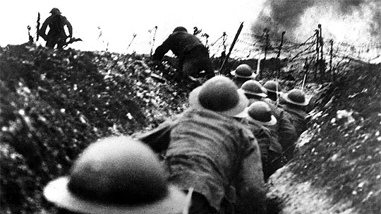

fue un conflicto militar global que se desarrolló entre 1939 y 1945. En ella se vieron implicadas la mayor parte de las naciones del mundo —incluidas todas las grandes potencias, así como prácticamente todas las naciones europeas


La Primera Guerra Mundial, anteriormente llamada la Gran Guerra,b fue una confrontación bélica centrada en Europa que empezó el 28 de julio de 1914 finalizó el 11 de noviembre de 1918, cuando Alemania aceptó las condiciones del armisticio.
¿cuales fueron los países que participaron en la Primera Guerra Mundial?:Durante la Primera Guerra Mundial, las Potencias de la Entente -- Gran Bretaña, Francia, Serbia y la Rusia Imperial (a las que más tarde se unieron Italia, Grecia, Portugal, Rumania y Estados Unidos)
fue un conflicto militar global que se desarrolló entre 1939 y 1945. En ella se vieron implicadas la mayor parte de las naciones del mundo —incluidas todas las grandes potencias, así como prácticamente todas las naciones europeas